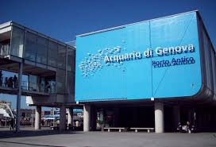
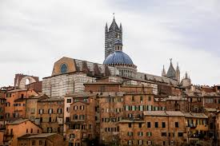
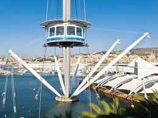
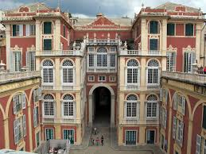
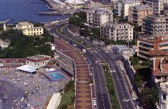

L'Acquario di Genova è uno dei più grandi d'Europa e offre un'esperienza unica per scoprire il mondo marino con oltre 600 specie provenienti da tutto il mondo. È una tappa imperdibile per famiglie e appassionati di natura.
Il centro storico di Genova è uno dei più grandi d'Europa. Passeggiare tra i suoi vicoli stretti, i caruggi, ti permetterà di scoprire angoli nascosti ricchi di storia e tradizione, come la Cattedrale di San Lorenzo e il Palazzo Ducale.
Il "Bigo" è un ascensore panoramico situato nel Porto Antico, progettato dall'architetto Renzo Piano. Offre una vista spettacolare a 360 gradi sulla città e sul mare, un'opportunità unica per vedere Genova dall'alto.
Il Museo di Palazzo Reale offre un'esperienza culturale unica, con sale decorate, opere d'arte e una vista mozzafiato sulla città. È una delle residenze storiche più significative di Genova, che racconta la vita aristocratica del passato.
Corso Italia è una delle passeggiate più affascinanti di Genova. Lungo il mare, è il luogo ideale per una passeggiata rilassante, fare sport o semplicemente godersi il panorama del Golfo di Genova, magari al tramonto.

©creator page-Scali gabriel